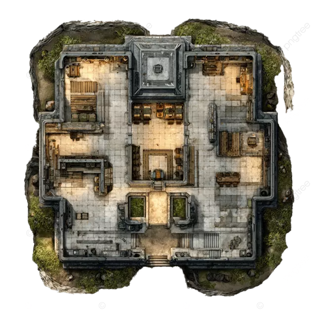

Elite 72‑Hour Survival Pack
This all‑in‑one kit includes a water filtration straw, emergency food, a thermal blanket, and a compact multi‑tool.
This all‑in‑one kit includes a water filtration straw, emergency food, a thermal blanket, and a compact multi‑tool.

Explore modular bunker layouts engineered for long‑term sustainability and safety.